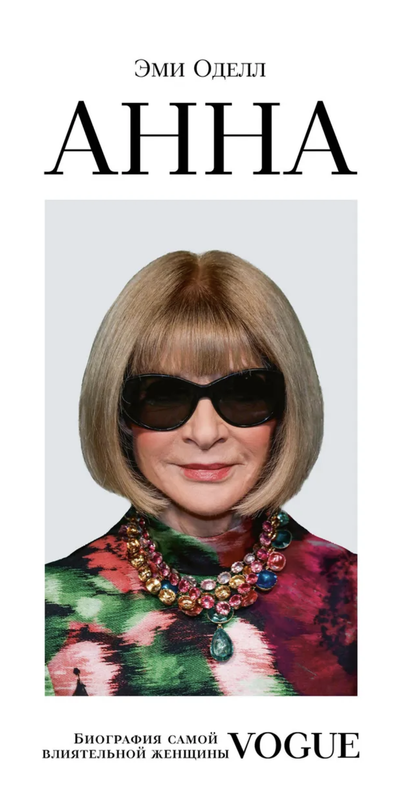
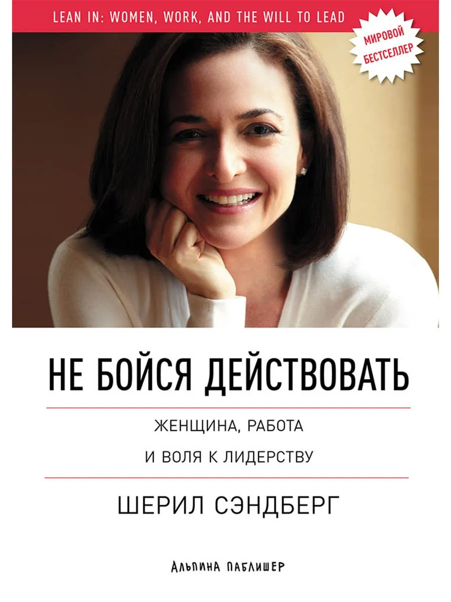
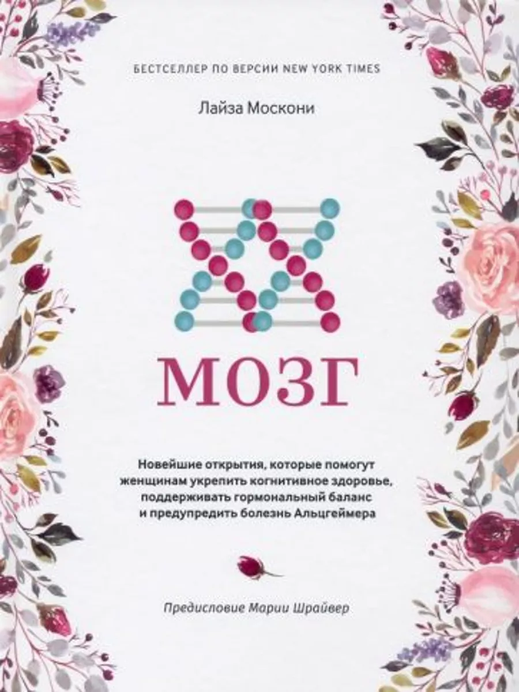
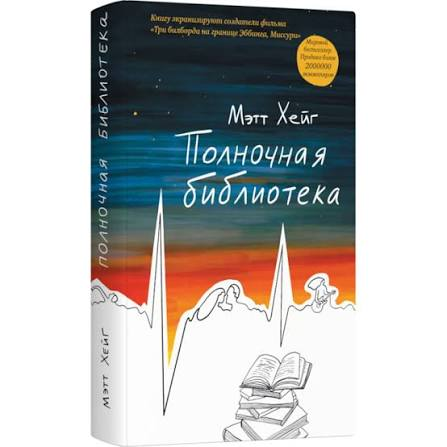
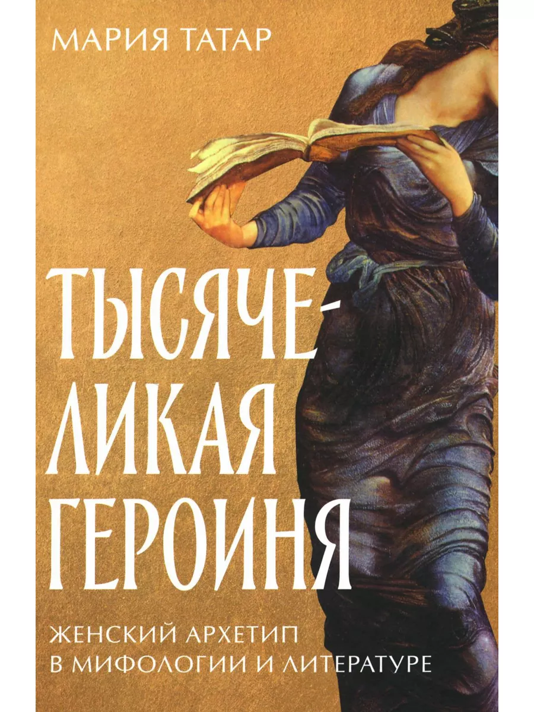
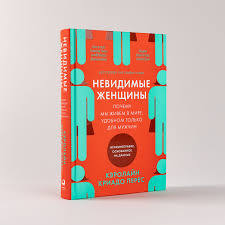
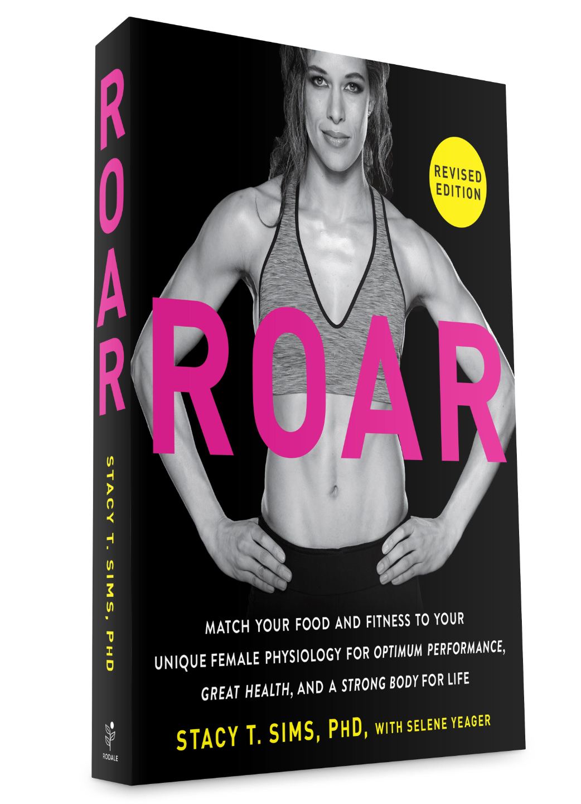
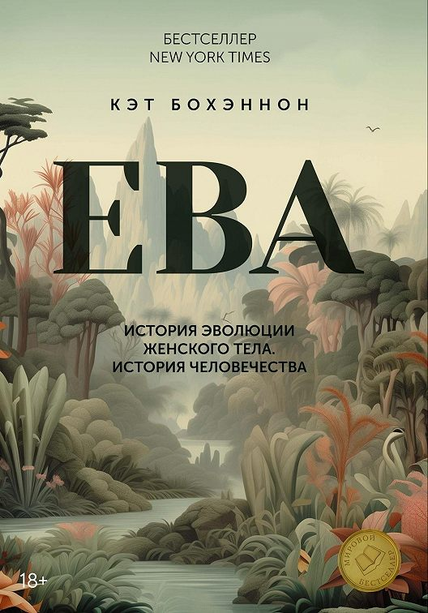
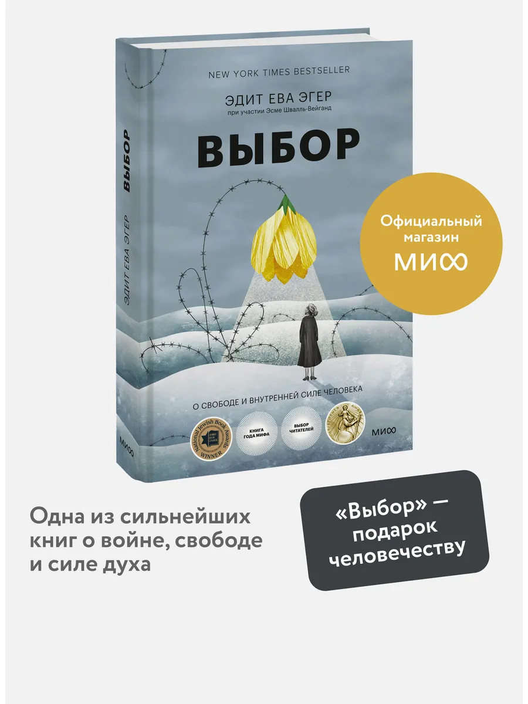

Расчет ИМТ с учетом реальной женской физиологии
Результаты сохраняются, чтобы отслеживать чистый тренд без учета гормональных колебаний.
Классический индекс массы тела (ИМТ) был разработан бельгийским математиком Адольфом Кетле еще в 1832 году. Он рассчитывается по примитивной формуле: Вес (кг) / (Рост (м))². Главная проблема этой формулы — она абсолютно **не учитывает женскую нейроэндокринную систему, фазы менструального цикла и задержку жидкости**.
Из-за этого обычные весы часто вводят женщин в заблуждение, показывая «лишний вес», который на самом деле является просто водой или особенностью тяжелой костной ткани.
Мы сначала рассчитываем ваш **Физиологический (чистый) вес**, и только потом подставляем его в классическую формулу Кетле:
Физиологический ИМТ = (Вес на весах − Сумма поправок) / (Рост в метрах)²
1. Гормональная задержка жидкости по фазам цикла
2. Кортизоловая отечность (Стресс и Недосып): −1.0 кг.
При хроническом стрессе или сне менее 7 часов надпочечники вырабатывают повышенное количество кортизола. Кортизол задерживает воду в межклеточном пространстве (особенно на лице и животе). Это временный гидратационный сдвиг, а не увеличение жировой ткани.
3. Костный скелет по Индексу Соловьева
Вес скелета у разных женщин может отличаться на 2–4 кг при одинаковом росте. Мы используем обхват запястья для коррекции:
4. Послеродовое восстановление и лактация: −1.0 кг.
В течение 1.5 лет после родов организм женщины сохраняет увеличенный объем плазмы крови, гипертрофированную ткань молочных желез и естественные отеки лимфосистемы. Мы аккуратно вычитаем 1 кг, чтобы уберечь маму от необоснованных диет.
Какие это книги и почему больше?
Гендерные стереотипы летают назойливыми мухами и вокруг выбора книг для детей. Принято считать, что младших школьников можно увлечь серией «Как приручить дракона?», девочки с охотой прочтут что-то о единорогах и феях. Но помимо условно гендерно-нейтральной школьной литературы, есть и потрясающий клондайк — литература домашняя, та, что дети читают для удовольствия. И если с мальчишками не нужно напрягаться в поиске подходящих им по полу и возрасту героев, то для девочек я предлагаю более тщательный подход.
В популярной речи нигерийской писательницы Чимаманды Нгози Адичи на TED есть любопытный фрагмент. Она рассказывает о своем детстве: счастливом и полном книг. Еще девочкой семи лет она начала писать истории, подражая прочитанным английским книгам. Вообразите себе эти детские книжки: голубоглазые персонажи с белой кожей, играющие в снегу, они говорят о погоде и радуются, что солнце вышло из-за туч. Чимаманда к этому возрасту не пробовала имбирный эль и не знала, какой снег на ощупь. Она думала, что книжная реальность именно такова, и поэтому в нее не проникают темнокожие девочки, живущие под палящим солнцем.
Есть довольно большой шанс, что девочки, читающие книги, где главная роль априори достается мальчишкам, примут реальность именно таковой: где она — наблюдатель за чужими мальчишескими историями.
Я убеждена, что родители вряд ли прочат своим дочерям только такой вариант развития событий. Ниже — примеры книг, которые помогут девочкам видеть перед собой сильных героинь и знать, что они могут стать главными действующими лицами своей жизни.
Автор: Эми Оделл

Вы можете не увлекаться трендами с подиумов, но Вы точно оцените масштаб личности. Анна Винтур — это пример женщины, которая подчинила себе целую индустрию и стала её синонимом. Книга Эми Оделл хороша тем, что она снимает с Анны глянец и показывает её как жесткого, эффективного и гениального топ-менеджера. Для Вашего женского проекта это отличный кейс о том, как выстраивать личные границы, держать фокус на результате и оставаться безусловным авторитетом, даже если весь мир шепчется у Вас за спиной. Про “Дьявол носит Prada" писать не буду, пожалуй, эти фильмы не могли пройти мимо Вас.
Автор: Лев Данилкин
Рекомендую книгу с тремя звездами Мишлен. Читать ее так же непросто, как впервые видеть исследования в научно-популярных книгах, когда автору кажется, что про упомянутый эксперимент все знают. Книга Льва Данилкина — это биография ума, вкуса и духа Ирины Антоновой, великой женщины-матриарха, которая больше полувека правила Пушкинским музеем. Это история о том, как масштаб личности позволяет не просто управлять институцией, а формировать культурный код целых поколений, привозить в СССР «Джоконду» и дружить с Шагалом. Потрясающий кейс о том, как женщина становится абсолютным и непререкаемым синонимом Искусства и Культуры.
Автор: Шерил Сэндберг

Настольная книга современной бизнес-вумен от экс-операционного директора Meta. Главное: Как женщине занять место за столом переговоров, перестать сомневаться в своих силах, совмещать семейную жизнь с управлением корпорацией и запускать новые проекты. К слову, в 2026 она имеет более 2 млрд долларов и участвует в проекте Nscale - это про ИИ и чипы. Шерил учит брать судьбу в свои руки, и эта решимость идеально рифмуется с собственным желанием так же жить.
Автор: Лайза Москони

Лайза Москони — ведущий нейробиолог, и она дает чистую науку без поп-психологии. Книга о том, как уникально работает наша нейробиология, как гормоны и эволюция сформировали женское восприятие, нашу легендарную интуицию, память и способность обрабатывать тонны информации одновременно. Это инструкция к самой себе и мощная научная база для изучения себя.
Автор: Метт Хейг

Бодрящая художественная книга о том, что где-то в «Полночной библиотеке» и только для Вас проигрывается теория Эверетта о многомировой интерпретации - попросту мысль, о том, что Вы выбираете, в какой из множества параллельных реальностей хотите и живете свою жизнь. Идеальна в тот момент, когда Вы не решаетесь сделать выбор или сожалеете о том, что не сделали когда-то решительный шаг в сторону заманчивых возможностей. Вероятно, это был единственно правильный выбор.
Автор: Мария Татар

Эту книгу читать имеет смысл только после «Тысячеликого героя» Кэмпбелла. Потому что перед Вами не только глубокий научный труд о месте в культуре женщины, но и захватывающий интеллектуальный баттл. И удовольствие от его наблюдения усиливается многократно, когда Вы владеете досье на каждого. Мария заполняет лакуны профессора очень гармонично, строит свой замок на женских образах, оставленных в качестве Героинь за пределами существования теории Кэмпбелла и, честное слово, наполняет культуру женской силищей. Татар может отпугивать множеством отсылок к другим произведениям, но, конечно, просто игнорируйте их. Всю эту библиотеку даже таким книжным червям как я не перечитать в скором времени. Смею надеяться, что Татар подарит Вам ощущение, что Вы - одна из нас, тысячеликих героинь, которая может исполнять любую роль, которая ей предназначена или выбрана ею самой.
Автор: Кэролайн Криадо Перес

Главная книга о том, почему классический ИМТ, автомобильные подушки безопасности и даже дозировки лекарств исторически рассчитывались только на мужчин. Блестящее исследование о дефиците гендерных данных, которое меняет взгляд на мир и подтверждает: наши ощущения дискомфорта в повседневной жизни — это не каприз, а системный сбой дизайна мира, который мы в силах изменить.
Автор: Стейси Симс

Женщины — не маленькие мужчины. Три важнейшие фишки из книги для Вашего тренировочного процесса:
1. Анаболическое окно у женщин короче мужского: белок после силовой нужно закрывать строго в первые 30-45 минут.
2. Во второй (лютеиновой) фазе цикла базальная температура выше, поэтому Вы быстрее перегреваетесь — снижайте интенсивность кардио в духоте.
3. Высокий уровень прогестерона перед менструацией снижает объем плазмы крови (задерживая воду в тканях) — за день до тренировки пейте больше воды с электролитами (особенно с натрием), чтобы избежать резкого упадка сил.
Автор: Кэт Бохэннон

Потрясающий и мощный антропологический нон-фикшн, который переворачивает привычный патриархальный нарратив эволюции. Бохэннон на огромном научном материале доказывает, что именно особенности женской биологии, вынашивания и социальных связей двигали человечество вперед на протяжении миллионов лет. Это великолепный, железобетонный идеологический фундамент, возвращающий гордость за нашу истинную силу. Книга красивая (жаль, иллюстрации ч/б), но и написана бойко, и структурировано классно и вообще настолько воодушевляет, что я не понимаю, почему она еще не стала суперхитом по всему миру. Особенно мне нравится юмор у Бохэннон, коего очень много в книге.
Автор: Эдит Ева Эгер

Одна из лучших книг, которая может позволить себе роскошь не только рассказывать тяжелейшую и одухотворяющую историю жизни Эдит, но и мягко подталкивать к решениям, которые зрели годами где-то внутри. Если не удастся сразу и с легкостью расстаться с Эгер, переходите к ее книге «Дар», ее рекомендую читать с карандашом, иначе она мало эффективна, а если уж совсем затянет, купите себе ежедневник с цитатами, который будет всегда говорить, что Вы имеете право на выбор.